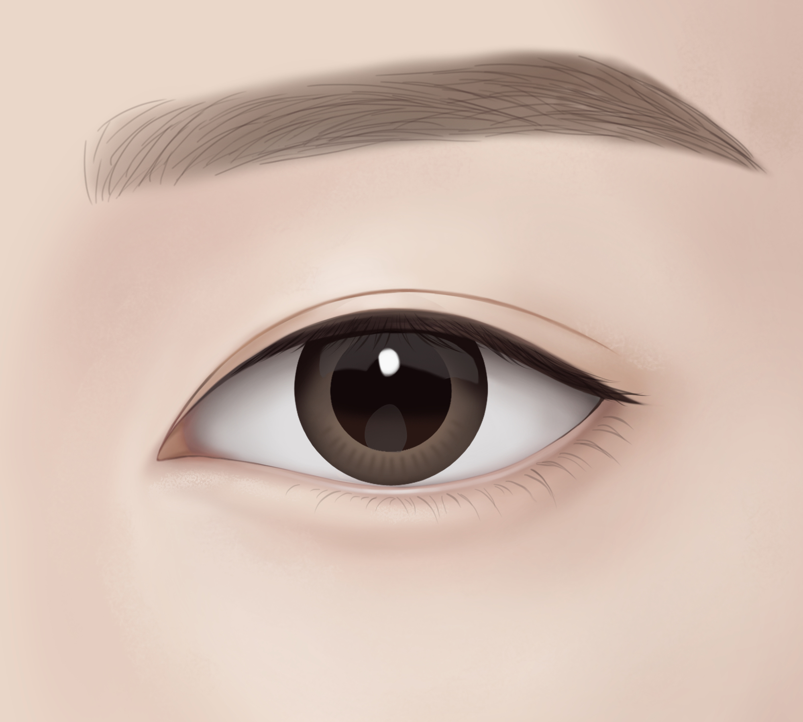

흉터 걱정 없는
자연스러운
쌍커풀을 원한다면
AMOND
자연유착
멍 / 부기 / 흉터 최소화
일주일 내외의 짧은 회복기간
수술 티 나지 않는 자연스러운 쌍꺼풀
아몬드 자연유착은 절개없이 피부와 근육 간의 자연스러운 유착을 유도하는 수술법으로, 과거의 매몰법 수술의 단점을 보완하여
추가적인 라인 유착을 유도하기 때문에 유지력과 고정력이 더욱 강한 쌍꺼풀 라인을 완성할 수 있습니다.
Information
-
수술시간
30분 내외
-
마취방법
수면/국소
-
실밥제거
없음
-
회복기간
큰 부기 1주
-
흉터
없음
멍 • 부기 거의 없는 일주일 완성
아몬드 자연유착
-
수술전
당일


-
수술전
당일


-
수술전
당일


-
수술전
당일


-
수술전
당일


-
수술전
당일


<< 좌우로 스크롤을 움직여 확인해보세요. >>
나에게 해당된다면 Check it!
자연유착이 필요한 경우
-
01.
절개가 부담스러운 분
-
02.
바쁜 일상으로 잦은 시간을 내기 힘든 분
-
03.
자연스럽고 풀리지 않는 눈을 갖고 싶은 분
-
04.
흉터, 부기, 출혈에 대한 걱정이 크신 분
-
05.
수술 한 티 없이 자연스러운 눈매를 갖고 싶은 분
-
06.
다양한 사례의 눈 성형 경험을 가진 성형외과전문의에게 수술을 받고 싶은 분
아몬드 자연유착
Check Point- Point 01
- Point 02
- Point 03
자연유착 수술방법
아몬드성형외과 원장님의 특화된 수술 방법!
-

각각의 눈매에 어울리는 라인을 디자인
-

디자인한 쌍꺼풀 라인에
6포인트 구멍을 뚫음 -

구멍을 통해 피부 안팎으로
실을 통과시켜 쌍꺼풀을 만듦 -

쌍꺼풀 라인의 피부·근육·지방·검판층이
자연스럽게 유착될 수 있도록 견고하게 매듭 처리
-
STEP1
각각의 눈매에 어울리는 라인을 디자인
-
STEP2
디자인한 쌍꺼풀 라인에
6포인트 구멍을 뚫음 -
STEP3
구멍을 통해 피부 안팎으로
실을 통과시켜 쌍꺼풀을 만듦
-
STEP1
-
STEP2
-
STEP3


A MOMENT OF NEW DAY